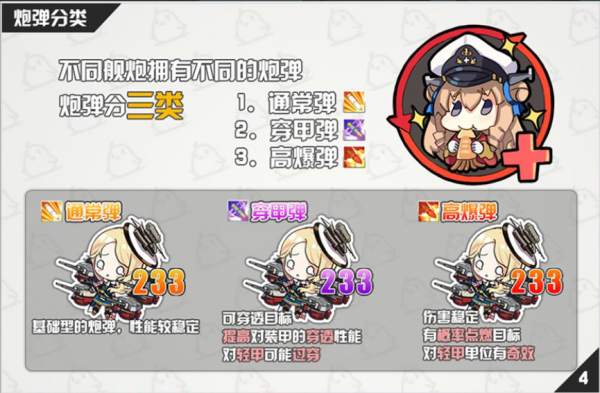

首页>装备
在碧蓝航线中，有舰炮、鱼雷、防空炮、舰载机、设备五大类装备。同时每个装备都有T0、T3、T2、T1的分级。只有一种分级的装备往往是T0，其余装备从T3~T1稀有度与性能逐渐递减。
稀有度有普通（白，1~2星）、稀有（蓝，3星）、精锐（紫，4星）、超稀有（金，5星）、传奇（彩，6星）。
装备可以通过消耗部件与物资进行强化，普通（白）最高+3，稀有（蓝）最高+6，其余最高+10，传奇（彩）的强化消耗是超稀有与精锐的3倍。
目前获得装备的方法有四种:
1、消耗物资合成装备设计图获得装备，装备设计图获得方式：刷图掉落、军部科研室获得。
2、打开科技箱获得装备，科技箱获得方式：军需商店功勋兑换、商店消耗物资购买、通过每周3、6、7的每日任务—斩首行动。
3、核心商店中使用核心数据兑换限量装备。
4、大型活动中使用PT点兑换限定装备。
不同类型的装备，其特性和数值也不同。
舰炮是所有水面舰艇的主武器。
炮击最终伤害=(1+舰娘面板属性x属性效率/100)x武器伤害面板x武器系数x武器效率x对甲效率x增伤类技能x敌人debuffx等级压制
不同类型的舰船可以装备的武器口径也各不相同：
| 口径 | 主炮适用 | 副炮适用 |
|---|---|---|
| 小于140mm（小口径舰炮） | 驱逐 | 战列、战巡、重巡、轻巡 |
| 大于等于140mm，小于200mm（中口径舰炮） | 轻巡 | 部分战列、战巡 |
| 大于等于200mm，小于等于203mm（中口径舰炮） | 重巡 | |
| 等于283mm | 袖珍战列舰（SKC28）；战列、战巡（SKC34） | |
| 大于283mm（大口径舰炮） | 战列、战巡、超巡 |
不同弹种的补正详见全武器对护甲补正一览
跨射的穿甲弹高爆弹和通常弹都是aoe伤害且范围相同。
不同的炮弹类型，对应不同的伤害数字颜色不同，灰色是“未击穿”或“过穿”，且依然会正常暴击，有1.5倍伤害，只是没有锯齿状边框。
一般而言效果越好，伤害数字越大。
鱼雷可以作为驱逐、部分轻巡、部分重巡的副武器装备；潜艇用鱼雷是潜艇的主要武器
雷击最终伤害=(1+雷击x属性效率/100)x武器伤害面板x武器系数x武器效率x对甲效率x增伤类技能x敌人debuffx等级压制
防空炮可以被大部分舰船装备。
有关防空炮系统，参阅防空公式终极奥义——井号教你打飞机
根据不同航母、轻航、航战的装备栏，可以装备不同种类的舰载机。有战斗机、轰炸机、鱼雷机、水侦（航战副武器）。
航空最终伤害=(1+航空x属性效率/100)x武器伤害面板x武器系数x武器效率x对甲效率x增伤类技能x敌人debuffx等级压制
评论